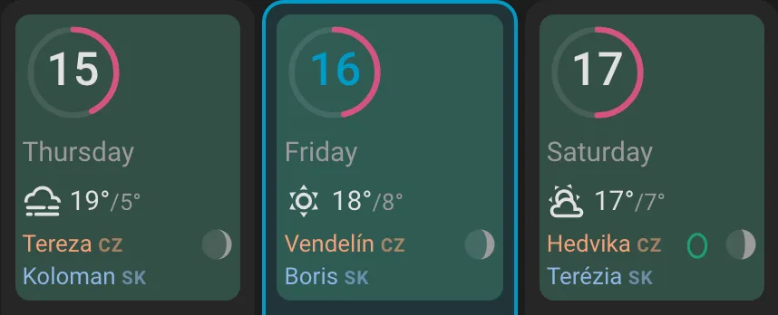
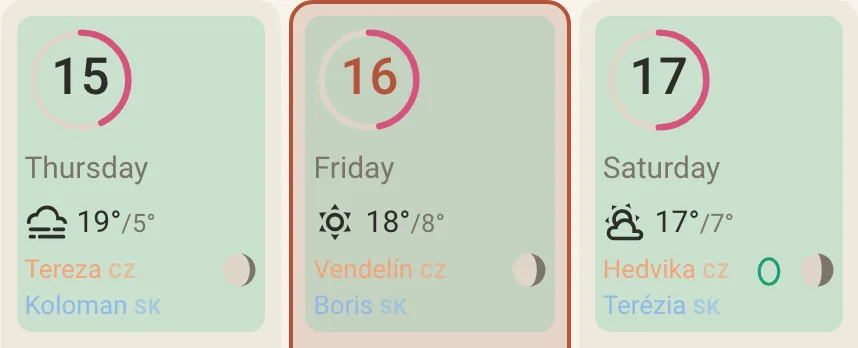
The moon and the weather, every day
Each day shows the forecast's icon with the high and low, and the moon's phase beside it. Living south of the equator? Flip the drawing with one option.
A Home Assistant calendar card for wall tablets — with the moon, the weather and cycle tracking built in.
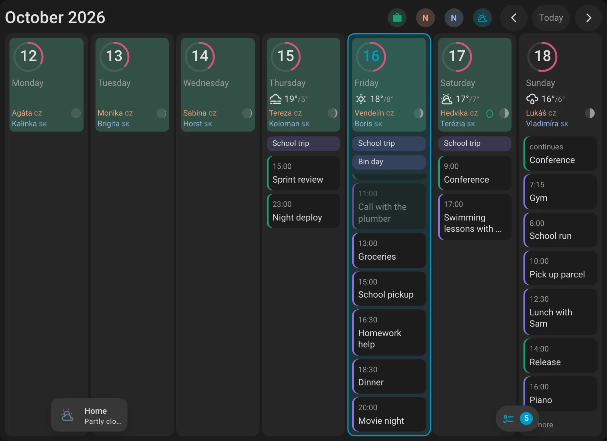
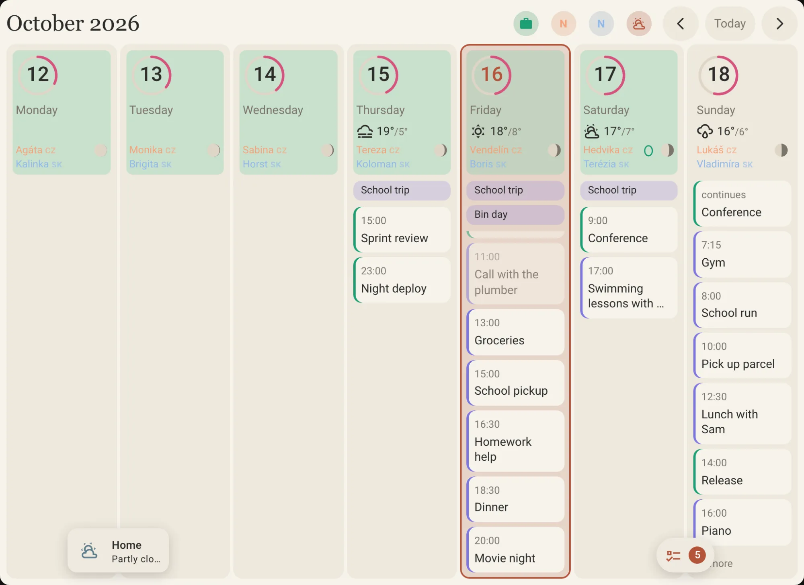
The phase for each day, right next to the weather.
Period, fertile window and ovulation as a quiet ring around the date.
Keep the shopping list over the bottom of the week.


Each day shows the forecast's icon with the high and low, and the moon's phase beside it. Living south of the equator? Flip the drawing with one option.
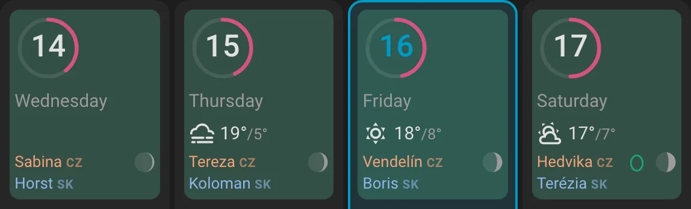
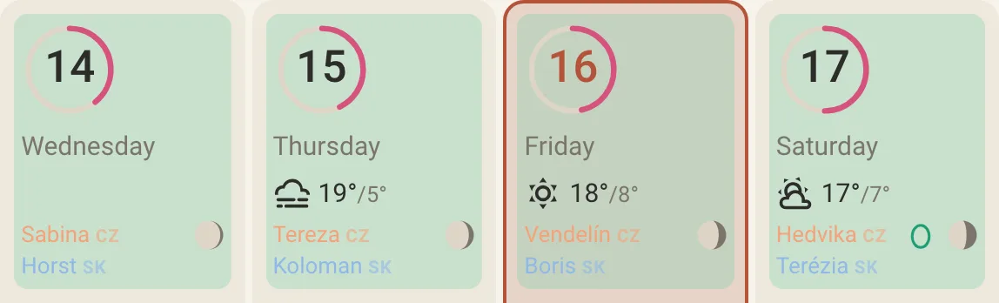
Turn it on and a ring around each date shows where the day sits in the cycle. A drop marks expected period days, a soft tint the fertile window, and an egg the ovulation day.
Off by default. Predictions use a fixed cycle length: a calendar hint, not medical advice and not contraception.
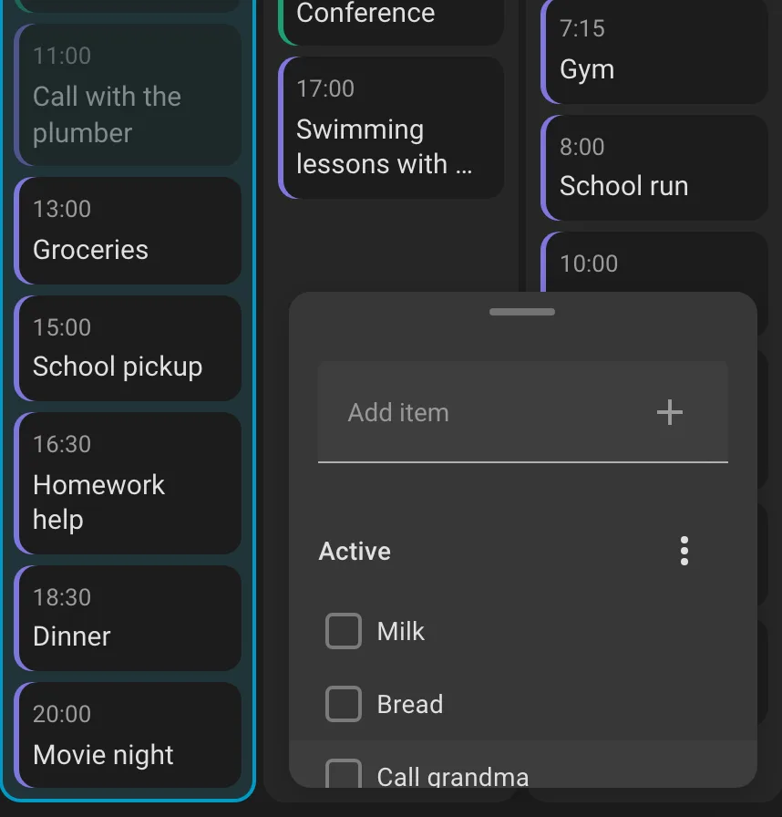
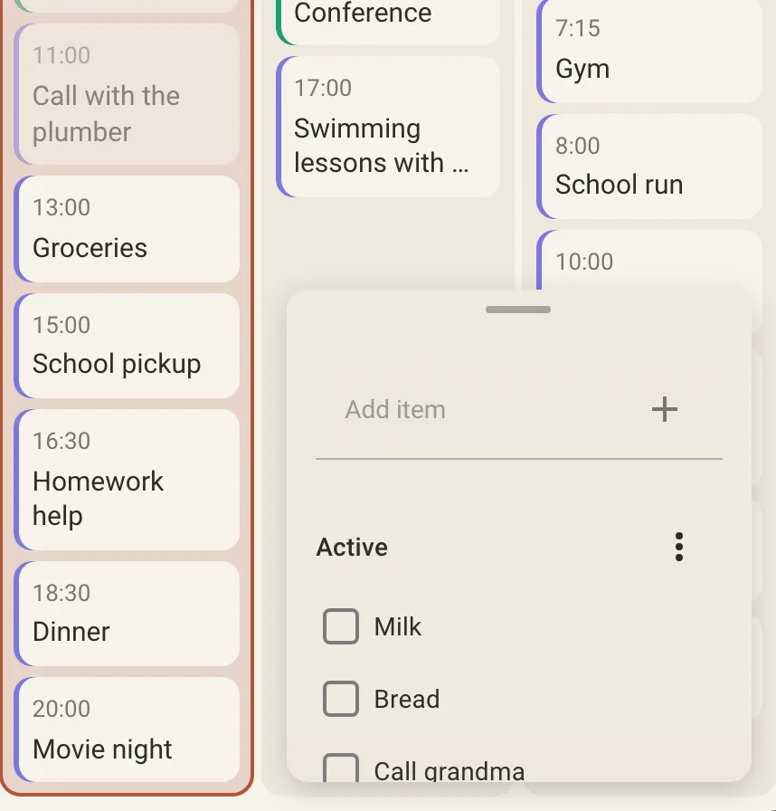
Put any Home Assistant card over the bottom of the week: a to-do list, a thermostat, a media player. Shrink it to a small pill when you don't need it. Each tablet remembers whether it's open.
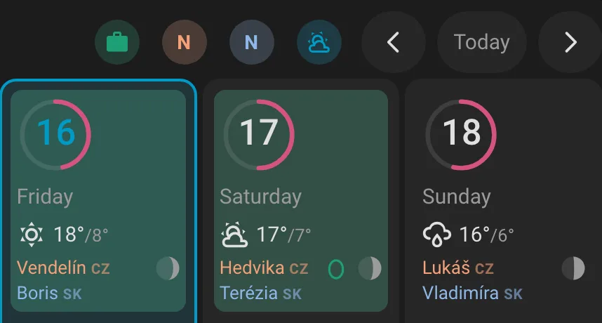
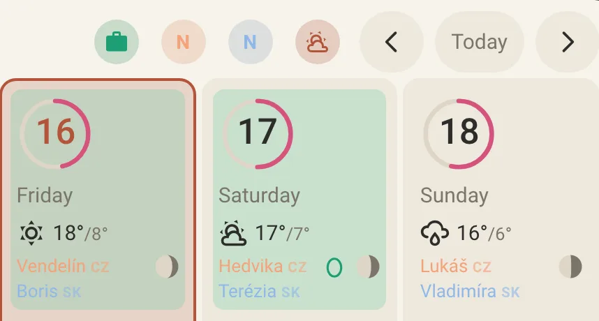
Any Home Assistant calendar works, each in its own colour. Tap a chip in the top bar to hide work on the kitchen tablet. Name days and holidays sit as a small line under the date instead of crowding the day.
Follow your Home Assistant theme, or pick Paper or Midnight. Then change any colour, font or size.
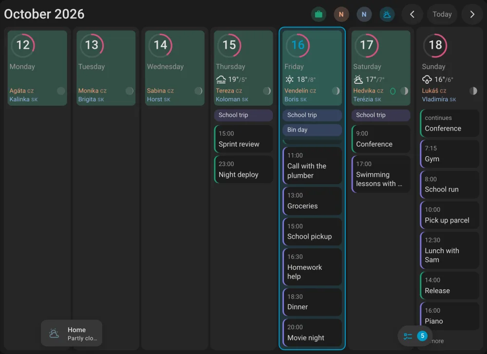
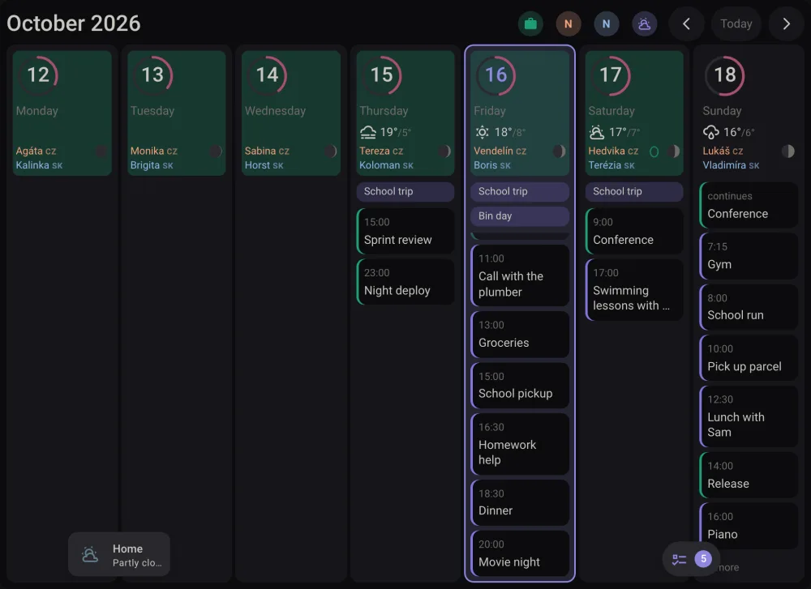
Or in HACS open ⋮ → Custom repositories and add https://github.com/TFoxik/wallcal with type Dashboard. Then open WallCal, click Download, and reload the browser and the wall tablet.
Edit a dashboard → Add card → search for WallCal and pick your calendars in the visual editor (Home Assistant 2026.10 or newer). Or paste this into the code editor:
type: custom:wallcal-card
entities:
- calendar.family
- entity: calendar.work
color: "#7F77DD"Put the card in its own view with the Panel layout so it fills the screen.
wallcal-card.js from the latest release into /config/www/./local/wallcal-card.js?v=1 as a JavaScript module.?v= so tablets drop the cached copy.